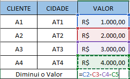
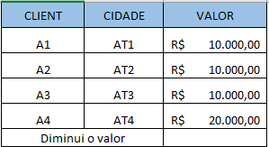
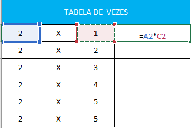
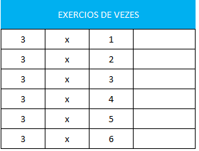
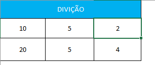
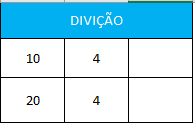

Como Funciona Aritméticos
Operadores aritméticos são aqueles segue-se regras básicas da matemática que foram convencionadas na seguinte ordem de resolução. Mas tambêm Os operadores aritméticos tambêm executam operações matemáticas, como adição e subtração com operandos. Já na Programação existem dois tipos de operadores matemáticos: unário e binário. Os operadores unários executam uma ação com um único operando. Operadores binários executam ações com dois operandos.

Adição
Primeiros Vamos Fala Do Famoso Adição o mas famoso no mundo do excel e sendo um dos mas facil de fazer. nos Utilizamos a adição em várias situações que envolvem números em nosso cotidiano, por exemplo, para contar objetivos ou, durante as compras, para saber o valor da conta, entre outras.
Então para que nos poder começar primeiro abra seu excel, ou abaixa a planilha cliclando aqui abrindo ja seu excel temos que entender Para realizar contas somando valores distribuídos entre diferentes células, você só precisa inserir o símbolo de igual “=”, escrever “SOMA” e abrir parênteses “(”. Feito isso, é só selecionar as células que deseja somar veja um exemplo abaixo.

Então Coloca os sinais e quando aparecer seleciona a celula e arrasta para baixo, o resultado será 6000$ ou tambêm pode ser usar =(A1+A2+A3+A4) tambêm da certo agora tente fazer isso!
Hora do Exercício

Parabêns! se você conseguiu fazer esse Exercício! se no seu total de vendas deu 14.434$ você acertou! agora caso você não conseguiu veja o vídeo cliclando no link para ver uma vídeo aula no youtube!
Subtração
Primeiramente, vamos saber qual o sinal de subtração , é o " - ", também conhecido como o hífen. Para subtrair não há uma função específica, então, para montá-la usaremos a sintaxe =célula - célula ou então =(célula - célula ), ou ainda, =(célula) - (célula) . Enfim, qualquer uma delas dará certo.
Então Para Que Nos Poder Começar Primeiro Abra Seu Excel, Ou Abaixa A Planilha Cliclando aqui Abrindo Ja Seu Excel Temos Que Entender Para Realizar calculos de diferença entre idades, valores, quantidades, entre outros
O valor que vai dar vai ser -8000$ O importante é você não esquecer que toda e qualquer fórmula do Excel deve começar com o sinal de igualdade. Depois é só por as células e o sinal de subtração.
Hora do Exercício
Parabêns! se você conseguiu fazer esse Exercício! se no seu total de vendas deu -30,000$ você acertou! agora caso você não conseguiu veja o vídeo cliclando no link para ver uma vídeo aula no youtube!
Multiplicação
para fazer uma multiplicação simples no Excel, basta apenas que você digite uma fórmula dentro de uma célula, utilizando os números. Para este exemplo, usamos =Célula * Célula, portanto, o que deve ser inserido na célula é “=10*10
Então Para Que Nos Poder Começar Primeiro Abra Seu Excel, Ou Abaixa A Planilha Cliclando Aqui Abrindo Ja Seu Excel Temos Que Entender que Na matemática, a multiplicação é uma forma simples de se adicionar uma quantidade finita de números iguais.
O Valor Que Vai Dar Vai Ser 2 O Importante É Você Não Esquecer Que Toda E Qualquer Fórmula Do Excel Deve Começar Com O Sinal De Igualdade. Depois É Só Por As Células E O Sinal De Multiplicação.
Hora do Exercício
Parabêns! Se Você Conseguiu Fazer Esse Exercício! Se No Seu Total De Vendas Deu 3,6,9,12,15,18 Você Acertou! Agora Caso Você Não Conseguiu Veja O Vídeo Cliclando No link Para Ver Uma Vídeo Aula No Youtube!
Divição
para fazer uma divição simples no Excel, então Para isso, selecione a célula onde quer ver o resultado e escreva a fórmula = Célula1/Célula2. Assim como na soma e na subtração, substitua onde se lê "Célula1" e "Célula2" pelas células que deseja dividir. Por exemplo =A1/A2. ou =(A1/A2)
Então Para Que Nos Poder Começar Primeiro Abra Seu Excel, Ou Abaixa A Planilha Cliclando aqui Abrindo Ja Seu Excel Temos Que Entender Que Na Matemática, A divisão é uma das quatro operações básicas da matemática e é inversa à multiplicação. A divisão de um número consiste em seu fracionamento
O Valor Que Vai Dar Vai Ser 2, 4 O Importante É Você Não Esquecer Que Toda E Qualquer Fórmula Do Excel Deve Começar Com O Sinal De Igualdade. Depois É Só Por As Células E O Sinal De Divição.
Hora do Exercício
Parabêns! Se Você Conseguiu Fazer Esse Exercício! Se No Seu Total De Vendas Deu 2,5 - 5 Você Acertou! Agora Caso Você Não Conseguiu Veja O Vídeo Cliclando No Link Para Ver Uma Vídeo Aula No Youtube!